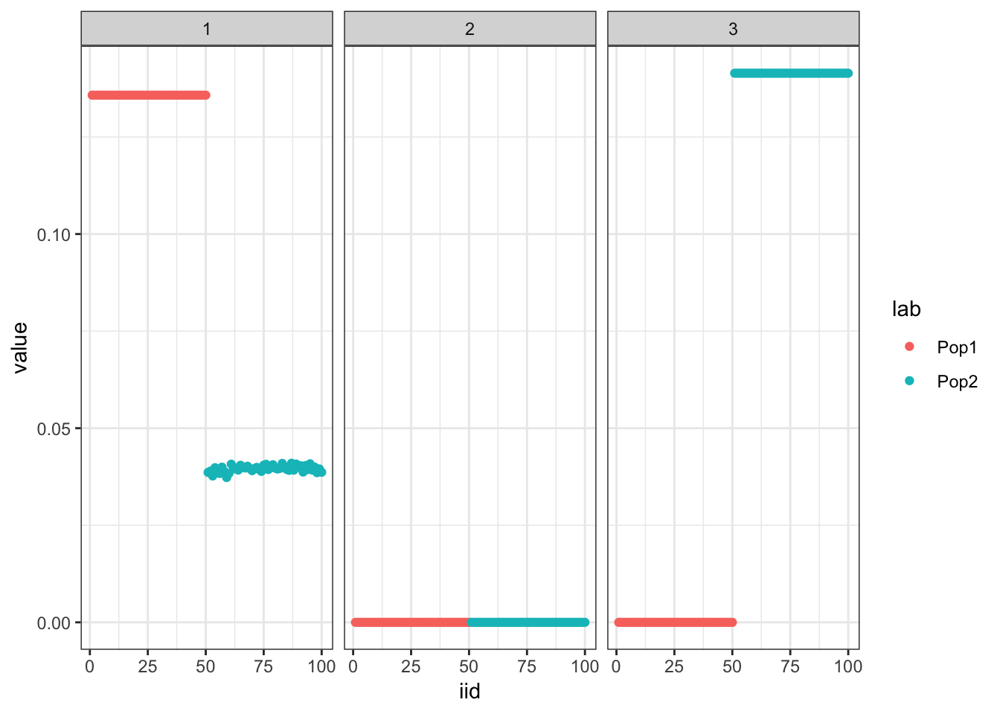

Tree simulation (2pop)
jhmarcus
2019-11-20
Last updated: 2019-12-01
Checks: 6 1
Knit directory: drift-workflow/analysis/
This reproducible R Markdown analysis was created with workflowr (version 1.4.0). The Checks tab describes the reproducibility checks that were applied when the results were created. The Past versions tab lists the development history.
The R Markdown is untracked by Git. To know which version of the R Markdown file created these results, you’ll want to first commit it to the Git repo. If you’re still working on the analysis, you can ignore this warning. When you’re finished, you can run wflow_publish to commit the R Markdown file and build the HTML.
Great job! The global environment was empty. Objects defined in the global environment can affect the analysis in your R Markdown file in unknown ways. For reproduciblity it’s best to always run the code in an empty environment.
The command set.seed(20190211) was run prior to running the code in the R Markdown file. Setting a seed ensures that any results that rely on randomness, e.g. subsampling or permutations, are reproducible.
Great job! Recording the operating system, R version, and package versions is critical for reproducibility.
Nice! There were no cached chunks for this analysis, so you can be confident that you successfully produced the results during this run.
Great job! Using relative paths to the files within your workflowr project makes it easier to run your code on other machines.
Great! You are using Git for version control. Tracking code development and connecting the code version to the results is critical for reproducibility. The version displayed above was the version of the Git repository at the time these results were generated.
Note that you need to be careful to ensure that all relevant files for the analysis have been committed to Git prior to generating the results (you can use wflow_publish or wflow_git_commit). workflowr only checks the R Markdown file, but you know if there are other scripts or data files that it depends on. Below is the status of the Git repository when the results were generated:
Ignored files:
Ignored: .RData
Ignored: .Rhistory
Ignored: analysis/.Rhistory
Ignored: analysis/flash_cache/
Ignored: data.tar.gz
Ignored: data/datasets/
Ignored: data/raw/
Ignored: docs/figure/.DS_Store
Ignored: docs/figure/hoa_global.Rmd/.DS_Store
Ignored: output.tar.gz
Ignored: output/
Untracked files:
Untracked: analysis/rpca.Rmd
Untracked: analysis/simple_2pop_tree_simulation_bimodal.Rmd
Untracked: code/ebnm_functions.R
Untracked: docs/figure/simple_2pop_tree_simulation_bimodal.Rmd/
Unstaged changes:
Modified: analysis/index.Rmd
Modified: code/sim.R
Note that any generated files, e.g. HTML, png, CSS, etc., are not included in this status report because it is ok for generated content to have uncommitted changes.
There are no past versions. Publish this analysis with wflow_publish() to start tracking its development.
Here I simulate Gaussian data under a simple 2 population tree i.e. a split and explore the interpretability of flashier fits to the data. The data generated under this tree can be represented as a probabilistic matrix factorization model with 1 shared factor and 2 population specific factors … this is what we’d like to recover.
Import
Import the required packages and load helper scripts for this analysis:
library(ggplot2)
library(dplyr)
library(tidyr)
library(flashier)
source("../code/viz.R")
source("../code/sim.R")
source("../code/ebnm_functions.R")Functions
Load functions for this analysis:
plot_2pop_loadings = function(L){
l_df = as.data.frame(L)
colnames(l_df) = 1:ncol(l_df)
l_df$ID = 1:nrow(l_df)
l_df$pop = c(rep("Pop1", n_per_pop), rep("Pop2", n_per_pop))
gath_l_df = l_df %>% gather(K, value, -ID, -pop)
p = ggplot(gath_l_df, aes(x=ID, y=value, color=pop)) +
geom_point() +
facet_wrap(K~.) +
theme_bw()
return(p)
}Simulate
Here I simulate the data generated from a simple 2 population tree. I set the residual std. dev. to .5 and prior variances to 1. There are 50 individuals per population and 10000 simulated SNPs:
##### sim #####
set.seed(235)
n_per_pop = 50
sigma_e = .5
sigma_b = rep(1, 3)
p = 10000
sim_res = tree_simulation_2pop(n_per_pop, p, sigma_e, sigma_b)
K = 3
Y = sim_res$Y
##### viz #####
plot_2pop_loadings(sim_res$L)
Greedy
Run the greedy algorithm which seems to recover the tree:
##### fit #####
flash_res = flash.init(Y, var.type=0) %>%
flash.add.greedy(Kmax=K,
prior.family=list(c(prior.bimodal(),
prior.normal()),
c(prior.bimodal(),
prior.normal()),
c(prior.bimodal(),
prior.normal()),
c(prior.bimodal(),
prior.normal()),
c(prior.bimodal(),
prior.normal()),
c(prior.bimodal(),
prior.normal())))Adding factor 1 to flash object...
Adding factor 2 to flash object...
Adding factor 3 to flash object...
Wrapping up...
Done.##### viz #####
pm = flash_res$loadings.pm[[1]]
plot_2pop_loadings(pm)
Initialize from greedy
Initialize the backfitting algorithm with the greedy solution which recovers a sparser representation of the tree i.e. it zeros out the shared factor:
##### fit #####
flash_res = flash.init(Y, var.type=0) %>%
flash.add.greedy(Kmax=K,
prior.family=list(c(prior.bimodal(),
prior.normal()),
c(prior.bimodal(),
prior.normal()),
c(prior.bimodal(),
prior.normal()),
c(prior.bimodal(),
prior.normal()),
c(prior.bimodal(),
prior.normal()),
c(prior.bimodal(),
prior.normal()))) %>%
flash.backfit()Adding factor 1 to flash object...
Adding factor 2 to flash object...
Adding factor 3 to flash object...
Wrapping up...
Done.
Backfitting 3 factors (tolerance: 1.49e-02)...
Difference between iterations is within 1.0e+03...
Difference between iterations is within 1.0e+02...
Difference between iterations is within 1.0e+01...
Difference between iterations is within 1.0e+00...
Difference between iterations is within 1.0e-01...
Wrapping up...
Done.##### viz #####
pm = flash_res$loadings.pm[[1]]
elbo_gr_bf = flash_res$elbo
plot_2pop_loadings(flash_res$loadings.pm[[1]])
Initialize from truth and fix the priors
Initialize from the truth and fix the prior which as expected recovers the tree representation we want:
##### fit #####
flash_res = flash.init(Y, var.type=0) %>%
flash.init.factors(EF=list(u=sim_res$L, d=rep(1, K), v=sim_res$Z),
prior.family=list(c(prior.twopm(pi = c(0.0, 1.0)),
prior.fixnormal()),
c(prior.twopm(pi = c(.5, .5)),
prior.fixnormal()),
c(prior.twopm(pi = c(.5, .5)),
prior.fixnormal()))) %>%
flash.backfit()Backfitting 3 factors (tolerance: 1.49e-02)...
Difference between iterations is within 1.0e+01...
Difference between iterations is within 1.0e+00...
Difference between iterations is within 1.0e-01...
Difference between iterations is within 1.0e-02...
Wrapping up...
Done.##### viz #####
pm = flash_res$loadings.pm[[1]]
elbo_init_true = flash_res$elbo
plot_2pop_loadings(flash_res$loadings.pm[[1]])
Compare the final elbos between the solution where we initialize from the truth and fix the prior to the solution where we initialize from the greedy fit and don’t fix the prior:
print(elbo_init_true)[1] -809767.7print(elbo_gr_bf)[1] -786235.7print(elbo_init_true>elbo_gr_bf)[1] FALSEThe solution where we initialize with greedy fit has a higher ELBO then when we initialize from the truth and fix the prior.
sessionInfo()R version 3.6.1 (2019-07-05)
Platform: x86_64-apple-darwin13.4.0 (64-bit)
Running under: macOS Mojave 10.14.2
Matrix products: default
BLAS/LAPACK: /Users/jhmarcus/miniconda3/envs/flash_e/lib/R/lib/libRblas.dylib
locale:
[1] en_US.UTF-8/en_US.UTF-8/en_US.UTF-8/C/en_US.UTF-8/en_US.UTF-8
attached base packages:
[1] stats graphics grDevices utils datasets methods base
other attached packages:
[1] ebnm_0.1-24 ashr_2.2-38 flashier_0.2.4 tidyr_0.8.3
[5] dplyr_0.8.0.1 ggplot2_3.1.1
loaded via a namespace (and not attached):
[1] Rcpp_1.0.2 compiler_3.6.1 pillar_1.3.1
[4] git2r_0.26.1 plyr_1.8.4 workflowr_1.4.0
[7] iterators_1.0.12 tools_3.6.1 digest_0.6.18
[10] lattice_0.20-38 evaluate_0.13 tibble_2.1.1
[13] gtable_0.3.0 pkgconfig_2.0.2 rlang_0.4.0
[16] foreach_1.4.7 Matrix_1.2-17 parallel_3.6.1
[19] yaml_2.2.0 xfun_0.6 withr_2.1.2
[22] stringr_1.4.0 knitr_1.22 fs_1.2.7
[25] rprojroot_1.3-2 grid_3.6.1 tidyselect_0.2.5
[28] glue_1.3.1 R6_2.4.0 rmarkdown_1.12
[31] mixsqp_0.2-4 purrr_0.3.2 magrittr_1.5
[34] MASS_7.3-51.4 codetools_0.2-16 backports_1.1.4
[37] scales_1.0.0 htmltools_0.3.6 assertthat_0.2.1
[40] colorspace_1.4-1 labeling_0.3 stringi_1.4.3
[43] pscl_1.5.2 doParallel_1.0.15 lazyeval_0.2.2
[46] munsell_0.5.0 truncnorm_1.0-8 SQUAREM_2017.10-1
[49] crayon_1.3.4